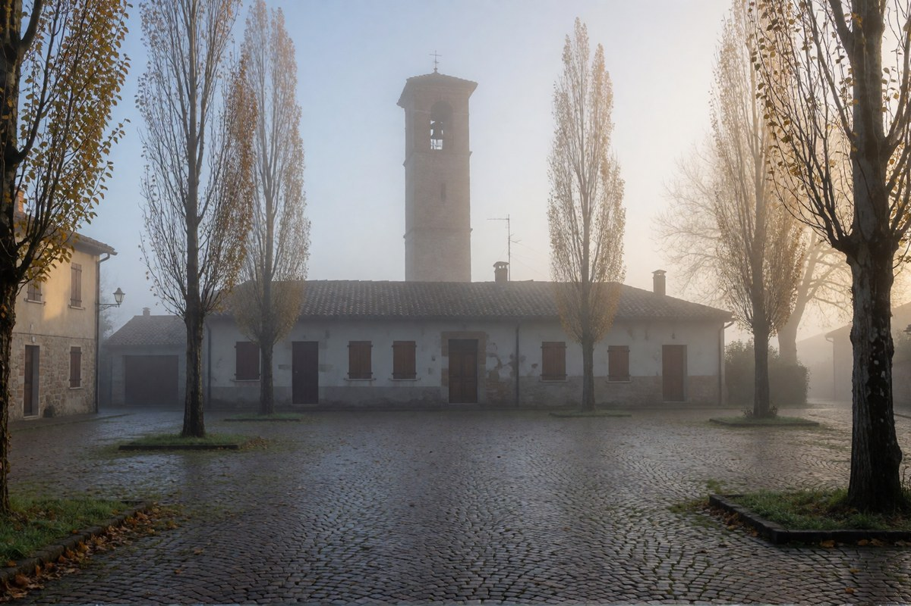

Mafia e antimafia · 13 novembre 2026
Trentaquattro anni dopo, tre ergastoli definitivi per gli omicidi del 1992

La Cassazione chiude il processo Aemilia 92 sui delitti di Reggio Emilia e Brescello: definitivi gli ergastoli per Nicolino Grande Aracri, Angelo Greco e Antonio Ciampà.
di Franco Zanghì
Trentaquattro anni dopo, due omicidi di 'ndrangheta commessi in Emilia hanno una sentenza definitiva. Venerdì 13 novembre la Corte di cassazione ha respinto i ricorsi delle difese e ha confermato tre ergastoli.
I due delitti
Reggio Emilia, 21 settembre 1992. Nicola Vasapollo è nel suo appartamento alla periferia della città, agli arresti domiciliari: in pieno giorno viene ucciso a colpi di pistola. Passa un mese. Brescello, il paese sulla riva del Po in provincia di Reggio Emilia, notte del 22 ottobre, le tre e mezza. Anche Giuseppe Ruggiero è ai domiciliari, nella sua casa. A svegliarlo arriva quella che sembra una pattuglia dei carabinieri, con un'auto dell'Arma. Non lo è: sono killer travestiti, con un'auto camuffata. Giuseppe Ruggiero viene ucciso.
Due delitti che, secondo la ricostruzione dei giudici, stanno dentro una faida: da una parte il gruppo Vasapollo-Ruggiero, dall'altra lo schieramento delle famiglie Dragone, Grande Aracri e Ciampà, con le radici a Cutro, in provincia di Crotone. Una guerra per il controllo del territorio e degli affari illeciti, portata dalla Calabria fino alle rive del Po.
Un fascicolo riaperto
Il procedimento è tornato a muoversi molti anni dopo. La Direzione distrettuale antimafia di Bologna è ripartita dalle dichiarazioni di alcuni collaboratori di giustizia, e la Squadra mobile di Reggio Emilia ha cercato le conferme fuori dai loro racconti, nei vecchi fascicoli e nei tabulati telefonici. Il processo è stato lungo e pieno di svolte: nel 2020 la Corte d'assise di Reggio Emilia ha condannato all'ergastolo il solo Nicolino Grande Aracri, per un solo delitto, assolvendo gli altri; nell'ottobre 2025 la Corte d'assise d'appello di Bologna ha deciso diversamente, con tre ergastoli e 18 anni al quarto imputato.
La parola fine
Ora gli ergastoli sono definitivi per Nicolino Grande Aracri, per Angelo Greco e per Antonio Ciampà; per Grande Aracri con un anno di isolamento diurno. Per il quarto imputato la responsabilità è definitiva, ma la pena va ricalcolata da un'altra sezione della Corte d'assise d'appello di Bologna e non potrà scendere sotto i 18 anni. La sera stessa, come riporta Telereggio, la Polizia ha rintracciato Antonio Ciampà a Cutro e il quarto condannato a Bologna, portandoli in carcere; a Grande Aracri e a Greco, già detenuti, l'ordine è stato notificato in cella.
«Non esistono omicidi dimenticati», ha commentato la Questura di Reggio Emilia. Libera Emilia-Romagna, parte civile nel processo insieme al Comune di Brescello, parla di un nuovo tassello di verità giudiziaria.
Il punto
Due uomini uccisi in casa nell'autunno del 1992, uno di loro da finti carabinieri. Un'indagine ripartita da zero molti anni dopo, un primo grado quasi tutto di assoluzioni e, alla fine, tre ergastoli definitivi. È la dimostrazione che un fascicolo non si chiude per stanchezza, e insieme la misura del tempo che serve: trentaquattro anni.
Fonti
- ANSA, la Cassazione conferma tre ergastoli nel processo Aemilia 92, 13 novembre 2026
- Il Fatto Quotidiano, la sentenza definitiva sugli omicidi del 1992, 13 novembre 2026
- l'Adige, «Gli omicidi di Aemilia 1992, definitive tre condanne all'ergastolo», 13 novembre 2026
- Telereggio, le notifiche degli ordini di carcerazione, 13 novembre 2026
- Reggio Sera, la ricostruzione del processo e le reazioni delle parti civili, 13 novembre 2026
Per il quarto imputato la pena deve essere ricalcolata dalla Corte d'assise d'appello di Bologna: alla data di pubblicazione il nuovo giudizio non si era ancora svolto.
Questo articolo nasce dalla pagina Gli Eroi dell'Abisso, dove la stessa storia è raccontata in video.